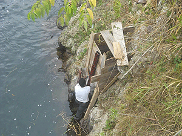
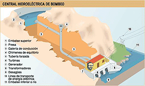
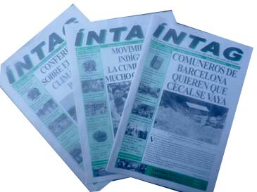

EQUIPO DE HIDROÍNTAG
SIGUE CAPACITÁNDOSE
En las ediciones 71 y 72 del Periódico INTAG, vimos que HidroÍntag ha empezado el seguimiento de los ríos con el apoyo de Enrique Cazalets y Maryori Chopin . El grupo de técnicos abarca cinco observadores, tres personas , además del señor Julio Espinoza, coordinador del consorcio Toisan. Ellos están encargados de medir los caudales de los ríos. Después de dos días de taller, la capacitación siguió con prácticas en el campo y en clase.
Los días 30 de junio y 1er de julio se reunió en las piscinas de Nangulvi el equipo de técnico de la HidroÍntag a cargo de seguir los niveles de los ríos y medir los caudales. Durante el primer día los objetivos fueron: aclarar el propósito de su trabajo, presentar algunos fundamentos de hidrología, establecer una visión y métodos comunes de trabajo y presentarles los primeros resultados del seguimiento así como identificar las dificultades que se habían enfrentado. Entre otras dificultades, se identificó que las reglas se secan (o sumergen), se alteran o dañan las marcas por culpa de bañadores. . Por ejemplo La regla puesta en el Toabunchi ha sido destruida al momento de la construcción del nuevo puente en Santa Rosa en Julio 2009 . Los voluntarios franceses ya cambiaron las reglas sobre el Chalguayalco, el Manduriaco Grande en una ubicación más conveniente e instalaron una nueva regla en el Toabuchi, asegurándose de que sea firme. En el caso del Manduriaco Grande, junto con la instalación de la nueva regla en la comunidad de Cielo Verde se está construyendo una obra de concreto para que los bañadores puedan divertirse al saltar de por encima. Falta cambiar la regla en el río Pamplona, eso se hará en las próximas semanas,.
En segundo día Enrique Cazalets presentó los varios métodos posibles para el aforo (o medición de caudales) con mayor énfasis en el que se va a usar: el aforo por dilución. Aunque el principio es sencillo, se necesita llevar a cabo varios ensayos para conocer las limitaciones del uso de este método y entender bien los parámetros que pueden afectar al resultado. Como límite principal se encuentra el rango de caudales que se pueden medir, en función de la conductividad inicial. En el río Toabunchi se midió 4800 litros por segundo este invierno. La calidad y cantidad de sal de sal usada(sal de grano o de cocina), la conductividad inicial, la distancia entre el sitio de inyección y de medida, las características del sitio de medición son algunos parámetros que influencian los resultados.
Desde la primera semana de julio, los voluntarios franceses están capacitando a tres personas para este fin con prácticas de campo en los ríos Toabunchi (puente de Santa Rosa), Chalguayalco (puente antes de la unión con el Guayllabamba), Nangulvi (en Nangulvi Alto) y Manduriaco Grande (en Cielo Verde). El conocimiento de los caudales en época de verano es de mayor importancia. Con menos agua, los ríos se vuelven más débiles y se produce mayor competencia para el reducido volumen. Para los proyectos de la HidroÍntag, se está estudiando la factibilidad de aprovechar más el invierno para no tocar el agua durante el verano. Si fueran diseñadas las centrales de tal forma, no causarían impactos en verano cuando existe mayor demanda por el agua por parte de comunidades y agricultores.
Aparte de la práctica mencionada, la capacitación incluye el manejo y mantenimiento de los equipos, trabajo sobre mapas, procesamiento de datos, control y validación de los resultados, con lo que se espera terminar a fines de septiembre.
PREGUNTAS Y RESPUESTAS SOBRE HIDROÍNTAG
¿CÓMO VA A AFECTARME A MI Y A LA ZONA?
El equipo de HidroÍntag sigue con los estudios y la capacitación de inteños e inteñas a fin de hacer realidad este proyecto. Desde 2008, los impulsores principales, José Cueva y Denis Laporta, han ofrecido charlas sobre el proyecto, su significado y sus consecuencias para la Zona y las comunidades ubicadas en el área de influencia de cada una de las centrales planificadas. Las charlas mencionadas han tomado lugar dentro del contexto de talleres y reuniones convocados para este propósito y, además, HidroÍntag ha constado en el orden de día de eventos como los foros anuales sobre el agua y la biodiversidad y las asambleas cantonales, a fin de socializar el proyecto (ver recuadro para el detalle de los eventos documentos por el Periódico INTAG). No obstante, existen aún interrogantes y preocupaciones. A continuación, las preguntas más comunes acerca de las centrales planificadas por HidroÍntag.
¿Que es HidroIntag? ¿De dónde viene la idea?
 HidroÍntag se propone como alternativa al modelo de desarrollo tradicional basado en el extractivismo como la minería o la tala de madera. HidroIntag promueve la instalación de 10 pequeñas y medianas centrales hidroeléctricas en los ríos de Íntag para una potencia instalada de 100MW, en el marco de un programa participativo de manejo de las cuencas. El proyecto se implementará a través de un consorcio-mancomunidad entre las juntas parroquiales de íntag, el gobierno provincial de Imbabura y la corporación Toisán. A través de esta figura jurídica, se creará una empresa de economía mixta y se buscará la inversión necesaria de 180 millones de dólares para construir las centrales en un plazo de 10 años.
HidroÍntag se propone como alternativa al modelo de desarrollo tradicional basado en el extractivismo como la minería o la tala de madera. HidroIntag promueve la instalación de 10 pequeñas y medianas centrales hidroeléctricas en los ríos de Íntag para una potencia instalada de 100MW, en el marco de un programa participativo de manejo de las cuencas. El proyecto se implementará a través de un consorcio-mancomunidad entre las juntas parroquiales de íntag, el gobierno provincial de Imbabura y la corporación Toisán. A través de esta figura jurídica, se creará una empresa de economía mixta y se buscará la inversión necesaria de 180 millones de dólares para construir las centrales en un plazo de 10 años.
¿Cuál es la visión que defiende HidroÍntag?
La energía producida si bien servirá para asegurar la distribución de electricidad en Íntag, se vendrá en la región Norte del país. El principal objetivo de este proyecto es la reinversión de las utilidades, aproximadamente $40 millones anuales, en un plan de manejo de cuencas que incluye acciones de conservación de bosques, reforestación, proyectos de desarrollo económico e infraestructura productiva y social.
La generación de la energía hidroeléctrica proporciona una alternativa a la quema de los combustibles fósiles o la energía nuclear, que permite satisfacer la demanda de energía sin producir agua caliente, emisiones atmosféricas, ceniza, desechos radioactivos ni emisiones de dióxido de carbono (CO2).
¿Qué diferencia existe entre HidroÍntag y Puma o HidroEquinocio?
La diferencia principal entre HidroÍntag y otros proyectos, como los del Gobierno, Hidroequinoccio o de empresas privadas como el proyecto Vacas Galindo, también conocido como Puma, es que HidroÍntag ha sido diseñado desde el interés de las comunidades que se encuentran el área de influencia de las centrales. Esto quiere decir que los diseños de las centrales se lo realizaron tomando en cuenta los criterios de las personas que habitan el sector, de los niños de las escuelas, de las organizaciones, de los y las finqueras cercanas al río, etcétera. De esta manera, se eliminó aquellos proyectos que podían afectar negativamente a las comunidades, la agricultura, el turismo y otros aspectos de importancia cultural, productiva, paisajística, turística y así por el estilo. Se escogieron solo aquellos en los cuales había un consenso total entre los habitantes.
Otra gran diferencia es el tipo de proyectos: HidroÍintag consta de pequeñas centrales al filo del río, cuyo impacto sobre el río es musy bajo pues ocupan una parte pequeña del agua, sin una gran represa que almacene agua en grandes cantidades. Por el contrario, los proyectos sobre el río Guayllabamba de HidroEquinoccio incluirían gigantescas represas en ese río, almacenando grandes cantidades de agua y disminuyendo de manera impresionante el cauce natural del río. Los impactos de estas costrucciones son mayores y todos podemos imaginarnos lo que significará tener una inmensa laguna de agua putrefacta como vecina… De igual manera, el proyecto Vacas Galindo, diseñado hace muchos años, utilizaría gran parte del agua del río Intag justamente en el tramo más turístico de Íntag, donde están las hosterías y las termales, donde se hacen rafting y pesca deportiva. Con esa central, sería seriamente afectado el turismo y, por ende, la economía de la Zona.
Finalmente, una diferencia importante entre HidroÍntag y otros proyectos es que los dueños del proyecto serían las juntas parroquiales, los municipios a través del Gobierno Provincial y el sector comunitario organizado a través de la Corporación Toisán. Si fuera sólo el Municipio de Cotacachi el dueño, o sólo una junta parroquial, se corre el riesgo de que el proyecto esté sujeto a manipulaciones políticas. Con un abanico de actores, no importa si hay un cambio de orientación en los gobiernos locales o si alguna organización deja de existir, los objetivos del proyecto están garantizados por la alta participación y democracia existentes en la estructura diseñada. Lo más importante es que las ganancias que genere el proyecto serán invertidas directamente en la conservación y el desarrollo de las comundades de Íntag, bajo un sistema de fideicomiso que garantiza el destino de las utilidades sin pasar por intermediarios, ni dependiendo de una institución burocrática.
¿En qué consiste una central hidroeléctrica?
En una central hidroeléctrica se utiliza la energía hidráulica para la generación de energía eléctrica. Las centrales hidroeléctricas son el resultado de la evolución de los antiguos molinos que aprovechaban la corriente de los ríos para mover una rueda.
Desde el punto de vista de su capacidad de generación de electricidad, las dos características principales de una central hidroeléctrica, son:
Pe =kxQ x H/1000
donde:
Pe = potencia en megavatios (MW)
K = factor entre 6 e 8
X= es el signo de multiplicación
Q = caudal de diseño en m3/s
H = desnivel disponible entre la presa (aguas arriba ) y el desagüe (aguas abajo), en metros (m)
En el caso de las minicentrales hidroeléctricas de los proyectos HidroIntag (salvo el proyecto en el río Intag), se tratan de potencia de unos pocos MW (megavatios). Por ejemplo, en el estudio de prefactibilidad de Nangulví, se considera un caudal de diseño de 2,8 m3/s, un desnivel de 300m, y un factor de 6 por lo que se estima la potencia de la central a 5 MW.
Las dos cosas, energía y potencia, son bien distintas. Para entenderlas se puede comparar una central hidroeléctrica con un carro: la potencia sería la velocidad máxima que se puede alcanzar, mientras la energía se refiere a la cantidad de gasolina necesaria para que un carro corra una distancia específica durante un año. Si no hay agua para la central (o gasolina para el carro), no hay producción de electricidad (camino recorrido).
¿De qué se constituyen las centrales hidroeléctricas?
En una central hidroeléctrica se ven las partes siguientes: la presa, donde se capta el agua; luego, uno o varios tipos de tubería (túnel, tubería de conducción, tubería forzada y o canal) que lleva el agua hasta la casa de máquinas. Allá, la fuerza del agua impulsa una turbina que hace girar un generador eléctrico, que es el que produce la electricidad que se transmite por líneas eléctricas.
Donde la presa, se sabe construir una represa (o embalse) que permite estabilizar el nivel del agua y remover los sedimentos que pueden dañar las turbinas. En casos como la central de Paute (1075 MW), los embalses sirven también para regular la cantidad de electricidad producida y asegurar una producción eléctrica durante el verano. En este caso, se almacene agua durante el invierno para turbinar durante el verano.
En el caso de las centrales HidroÍntag, salvo el proyecto en el río Íntag (justo antes de la unión con el Guayllabamba), no se prevee contruir grandes embalses para almacenamiento, sino represas para estabilizar el agua. Por ejemplo en el estudio de prefactibilidad de Nangulvi, se plantea una represa de unos 15 metros de altura.
¿Cuáles son los impactos?
Los impactos potenciales de una central incluyen los que se asocian con la construcción, el mantenimiento y el funcionamiento de la central (por ejemplo., los caminos de acceso, los campamentos de construcción, las líneas de transmisión de energía) y el desarrollo de las actividades que posibilitan la central.
Los impactos más permanentes son el resultado de la inundación de la tierra para formar el embalse y la alteración del caudal de río aguas abajo del embalse. Además los proyectos hidroeléctricos, necesariamente, implican la construcción de líneas de transmisión para transportar la energía a la red de distribución. No obstante, se pueden evitar o reducir estos impactos si se evalúan, cuidadosamente, los problemas potenciales, si se implantan medidas preventivas menos costosas que las medidas correctivas. Por eso se necesita conocer los recursos hídricos a lo largo del año y registrarlos durante meses para adaptar el diseño de las centrales con el fin de minimizar los impactos ambientales.
HidroIntag ha iniciado un seguimiento de los ríos para el mejor conocimiento y conservación de los recursos hídricos.
¿Se va a secar los ríos?
Si bien para generar electricidad se necesita captar el agua en una parte para verterla aguas abajo, en el tramo del río entre los dos puntos permanecerá lo que se llama el caudal mínimo. El caudal mínimo es parte del diseño de la central. Anteriormente, el caudal mínimo se definía como el 10 por ciento del caudal medio. Sin embargo, puede que los ríos necesiten mucho más para evitar la alteración de los corredores ecológicos constituidos por estos cauces hídricos. Por esto, desde hace algunos años, los científicos promueven la adopción del concepto de un caudal mínimo ecológico, que puede definirse como el agua necesaria para preservar los valores ecológicos en el cauce del río, como los hábitats naturales que cobijan una riqueza de flora y fauna, las funciones ambientales como la dilución de contaminantes, la amortiguación de los extremos climatológicos e hidrológicos y la preservación del paisaje.
Para los proyectos de la Hidroíntag, se está estudiando la factibilidad de mejor aprovechar el invierno para no tocar el agua durante el verano. Diseñadas de tal forma, no habría impactos de las centrales en verano cuando más las comunidades y los agricultores necesitan los ríos.
¿Por qué el manejo de las cuencas es imprescindible de los proyectos de centrales hidroeléctricas?
Un proyecto de central es un proyecto que se desempeña al nivel de una cuenca, y no solamente al nivel de la toma de agua o de la comunidad. Se sabe que la alteración del medio ambiente afecta el funcionamiento de la central y aumenta los costos de mantenimiento. Ciertas actividades humanas (la deforestación y los cultivos intensivos, por ejemplo) deterioran la calidad del agua y aumentan la erosión de los suelos. Esos factores pueden causar una mayor acumulación de sedimentos finos o gruesos (piedras) que llenan la represa y dañan los equipos.
HidroÍntag plantea el plan de manejo de cuencas como herramienta imprescindible de la operación de una central. Los beneficios servirán para invertir al nivel de las cuencas en acciones de conservación de bosques y reforestación.
¿Cómo saber si me conciernen estos proyectos?
Los 10 proyectos de centrales no tienen todos los mismos niveles de avances en los estudios. Algunos (Nangulvi y Chalguayaco) se estudiaron hasta la prefactibilidad mientras otros (San Miguel, San Andres, Pilchihuiaica), se estudiaron lo mínimo. Por eso, muchas incertidumbres permanecen para el diseño de los proyectos individuales.
El quipo de HidroÍntag volverá a socializar sobre cada proyecto a partir de noviembre. Mientras tanto las personas con preguntas pueden visitar la oficina de HidroÍntag, en el edificio de la Corporación Toisán, al lado del Colegio Nacional Apuela.
{niftybox background=#F0F0EE,textcolor=green,font=, width=, height=,clear=}
UN PROYECTO BIEN DOCUMENTADO
HidroÍntag ha despertado el interés no sólo de los y las inteñas sino de científicos, académicos y periodistas que llegan a la Zona a fin de llevar a cabo estudios sobre otros asuntos y que terminan enterándose del proyecto y, en algunos casos, escribiendo artículos para este medio comunitario sobre el tema. Como resultado del interés señalado, el progreso en el esfuerzo de hacer realidad el proyecto y los obstáculos que ha enfrentado han sido documentados en estas páginas. Los artículos citados a continuación son sólo una parte de dicha documentación, puesto que HidroÍntag también se menciona en otros artículos, sobre todo, los relacionados con la lucha para evitar que entidades y particulares de afuera pongan centrales en nuestros ríos, así privatizando el recurso agua que los inteños estamos protegiendo. De hecho, fue esta amenaza que inspiró el esfuerzo que se llama HidroÍntag. La lista a continuación incluye el número del Periódico INTAG en que se publicó el artículo señalado, la fecha del número, el título del artículo, el autor y la página.
#52, marzo-abril de 2008 “¿Queremos ser dueños o empleados?”, José Cueva, página 10
#53, mayo-junio de 2008 “Agua y energía: temas del foro en Cotacachi”, Mary Ellen Fieweger, página 8
#54, julio-agosto de 2008 “Minicentrales tienen future en Intag”, José Rivera, páginas 1-2
#55, septembre-octubre de 2008 “HidroÍntag propone construir nueve centrales”, Mary Ellen Fieweger, páginas 4-5
#56, noviembre-diciembre de 2008, “III Foro de Agua y Biodiversidad en Íntag”, Sarah Klemm, páginas 1-3
#57, enero-febrero de 2009 “Representante de E&Co visita la Zona”, Sarah Klemm, página 8
#58, marzo-abril de 2009 “Colaboración entre HidroÍntag e HidroEquinoccio”, Sarah Klemm, página 6
#59, mayo-junio de 2009 “Se necesita formar jóvenes para HidroÍntag”, José Rivera, página 7
“Ingenieros franceses colaboran con HidroÍntag”, Sarah Klemm, página 17
#61, septiembre-octubre de 2009 “Moradores de Azabí conocen el Proyecto HidroÍntag”, Linda D’Amico, página 6
“Inteños visitan el minicentral El Carmen”, Linda D’Amico, página 8
“FEPP apoya capacitación para jóvenes inteños”, Sarah Klemm, página 11
#62, noviembre-diciembre de 2009 “Albañilería, servicios de restaurante y topografía”, Linda D’Amico, página 9
“HidroÍntag viaja a las comunidades de García Moreno”, Linda D’Amico, página 9
#63, enero-febrero de 2010 “HidroÍntag inicia el proceso de capacitación”, Patricia Ortiz, página 14
#64, marzo-abril de 2010 “Que se pronuncien las autoridades locales y seccionales”, Linda D’Amico, página 8
#65, mayo-junio de 2010 “Proyecto HidroÍntag está frenado”, Denis Laporta y Linda D’Amico, página 11
#71, mayo-junio de 2011 “Apoyo de misión francesa a HidroÍntag”, Marjorie Chopin, página 11
#72, julio-agosto de 2011 “HidroÍntag estudia los recursos hídricos”, Marjorie Chopin, páginas 8-9
{/niftybox}